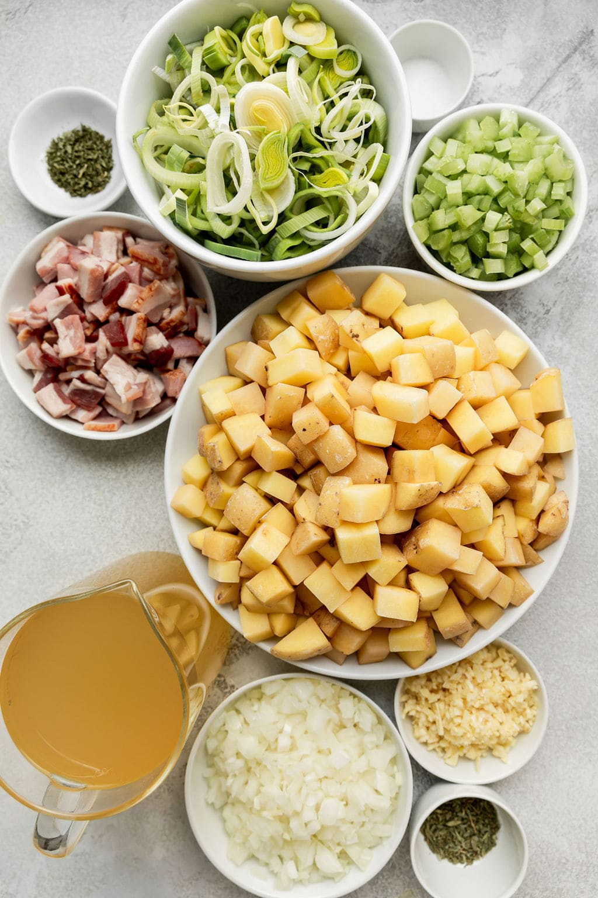
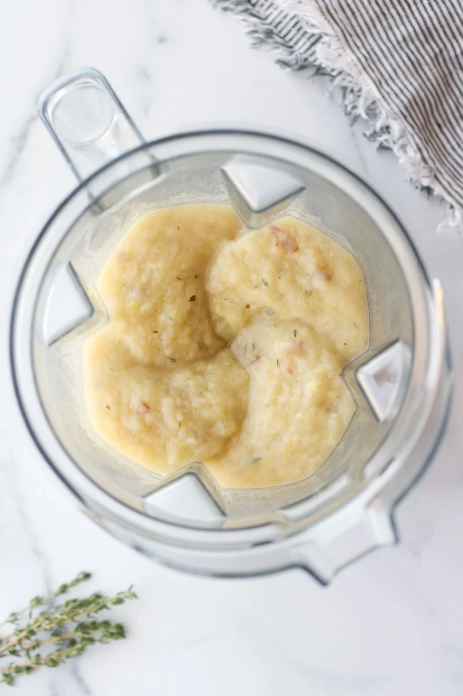
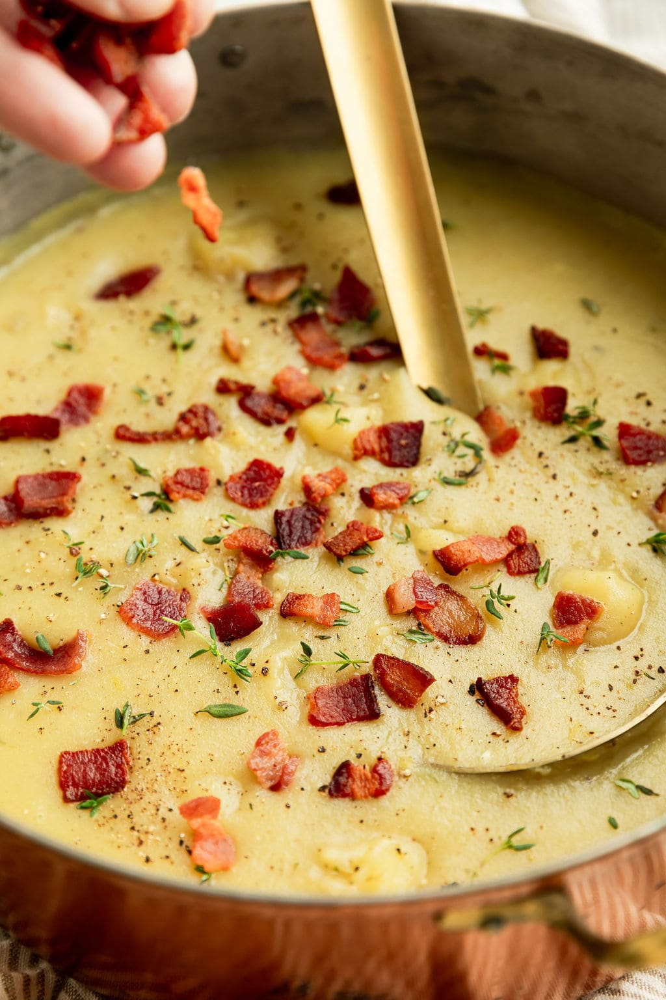

Ingredients
- 4–5 strips slices bacon, chopped
- 1 large leek, thinly sliced (white and light green parts only; about 2–3 cups)
- 2 celery ribs, finely diced (about ⅓ cup)
- ½ medium yellow onion, diced (about 1 cup)
- 5 cloves garlic, minced
- ¾ teaspoon dried thyme (or 2 teaspoons fresh thyme leaves)
- ½ teaspoon dried parsley (or 1 tablespoon fresh parsley)
- ½ teaspoon salt, plus more to taste
- 2 lbs. red or Yukon gold potatoes (or a mix), cut into ¼–½-inch cubes with skin still on
- 3 cups chicken or vegetable broth, divided
Directions
- Place a large pot or Dutch oven over medium-high heat.
- When the pot is hot, add the chopped bacon and cook, stirring occasionally until crisp (about 5 minutes).
- Transfer the bacon to a paper-towel-lined plate to drain; set aside.
- To the same pot with the bacon drippings, add the sliced leek, celery, and onion. Cook, stirring occasionally, for 7-8 minutes or until the onions start to soften.
- Add garlic, stir, and cook for another 30 seconds or until fragrant.
- Add the remaining ingredients to the pot (except for the bacon, ½ cup of the broth, and any garnishes). Set aside the ½ cup broth for later.
- Bring ingredients in the pot just to a boil, then lower the heat to maintain a vigorous simmer and cover with a lid.
- Cook for 20-22 minutes or until potatoes are very tender. Remove from heat and ladle half to three-quarters of the soup into the container of the blender.
- Secure the blender lid in place and blend until the soup is creamy with some chunks remaining. Or, if you want it extra creamy, blend it even further to your desired consistency. (You can also use an immersion blender.)
- Carefully remove the blender lid and stir the blended soup back into the pot.
- Add the reserved ½ cup broth, if needed, to thin the soup to your desired consistency.
- Season with salt as needed, stir in the bacon, and garnish with optional toppings of choice.